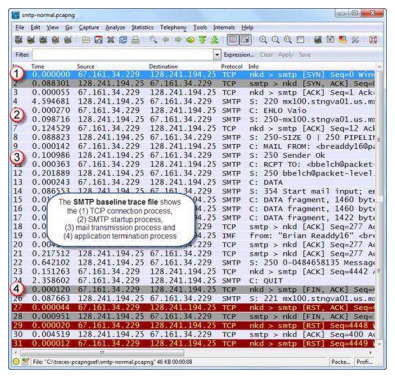
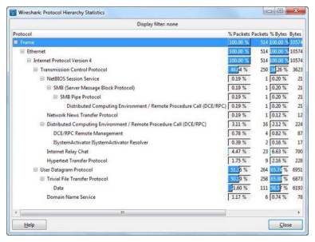

Wireshark Network Analysis 2nd Ed · Laura Chappell
You can't know what's wrong until you know what's normal — baseline first.
Regular baselines reveal gradual changes and enable rapid problem diagnosis.
No questions yet.
No notes yet.
💡THINK FIRST · WHY BASELINE YOUR NETWORK
A baseline captures 'normal' network behavior — so you can detect deviations. But what makes a baseline useful? If you only capture 1 minute of traffic at 2 AM, is that a useful baseline? And how do you use a baseline when you're troubleshooting a reported problem?
HINT
Think about what factors affect what 'normal' looks like — time of day, day of week, network load, applications in use.
MODEL ANSWER
A useful baseline must capture representative traffic: peak hours, off-peak hours, multiple days of the week. A 2 AM baseline only shows maintenance traffic and doesn't represent business hours. When troubleshooting: compare current trace to the baseline — differences reveal what changed. Baseline captures should include: overall IO rate, protocol distribution, top talkers, average latency, and expert info counts. Regular baselines (monthly or quarterly) create a historical record that shows gradual changes that might otherwise go unnoticed.
Why Baseline Your Network
A network baseline establishes what 'normal' looks like on your network. Without a baseline, you can't answer: 'Is this traffic level unusual?' or 'Is this latency higher than normal?' Baselines are critical for:
Proving that a problem is real (not just user perception)
Measuring the impact of network changes
Capacity planning — identifying when to upgrade
CAPTURE BASELINES REGULARLY
Capture baselines: at least once per quarter, before and after major network changes, during typical business hours, and during off-hours for comparison. Store trace files with timestamps and context notes. Compare current vs historical to spot trends. Even a 15-minute capture during peak hours is valuable.
🧠
MENTAL NOTE
Baseline = normal network behavior snapshot. Capture at: peak hours, off-peak, multiple days. Use: IO rate, protocol distribution, top talkers, latency, expert info counts. Compare current vs baseline to find changes. Essential before/after network changes and for capacity planning.

📷Figure 337 — open trace file to view
Figure 337. An SMTP baseline trace
Ask a Question
Add a Note
💡THINK FIRST · COLLECTING BASELINES
What Wireshark statistics should you collect for a useful network baseline? Which five statistics give the most complete picture of network health?
HINT
Think about what questions a network administrator would want to answer: how busy is the network, who is talking to whom, what protocols, are there errors?
MODEL ANSWER
Five essential baseline statistics: (1) IO Graph — overall traffic rate in packets/sec and bits/sec over time (reveals peaks and patterns). (2) Protocol Hierarchy (Statistics | Protocol Hierarchy) — percentage of each protocol type (useful for detecting new/unexpected protocols). (3) Conversations (Statistics | Conversations) — top talkers by bytes (identify bandwidth consumers). (4) Expert Info (Analyze | Expert Information) — count of TCP problems, errors, warnings (establish normal error rate). (5) TCP Round Trip Time Graph — baseline latency between key servers and clients. Save these statistics with each baseline capture.
Collecting Baselines
Useful statistics to collect for a network baseline:
Statistics | IO Graphs: Overall traffic rate (packets/sec, bytes/sec). Look for: normal peak rate, daily traffic patterns, traffic distribution over time
Statistics | Protocol Hierarchy: Protocol distribution percentages. Look for: unexpected protocols, shifts in application usage
Statistics | Conversations: Top talkers by bytes. Look for: bandwidth hogs, unexpected destinations
Analyze | Expert Information: Counts of errors, warnings, notes, chats. Establish a 'normal' TCP problem rate
Statistics | Summary: Overall trace statistics including average packet size and capture duration
What to Note in Your Baseline
Time and duration of capture
Network utilization percentage
Protocol breakdown (% broadcast, % TCP, % UDP)
Top 5 talkers by IP address and bytes
Expert Info count: errors, warnings, notes
Average TCP RTT to key servers
Average packet size
🧠
MENTAL NOTE
Baseline stats: IO Graph (rate/pattern), Protocol Hierarchy (distribution), Conversations (top talkers), Expert Info (error baseline), TCP RTT (latency baseline). Document: when captured, utilization %, protocol %, top talkers, error counts. Save trace files for future comparison.

📷Figure 338 — open trace file to view
Figure 338. We know this network doesn't usually have IRC and TFTP traffic on it Baseline Boot up Sequences Analyzing the boot up sequence is important since this sequence set
Ask a Question
Add a Note
💡THINK FIRST · ANALYZING AND INTERPRETING BASELINES
You've collected baselines for 3 months. Now users report the network 'feels slow.' How do you use your baselines to prove or disprove this? What deviations from baseline would confirm a network problem vs an application problem?
HINT
Think about which baseline metric would catch each type of problem: network saturation, new bandwidth-consuming application, degraded server response times.
MODEL ANSWER
Network saturation: IO Graph shows utilization at or near line rate during problem periods. New bandwidth consumer: Conversations shows new top talker or Protocol Hierarchy shows unexpected protocol spike. Degraded server response: TCP RTT Graph shows higher latency than baseline to that server. Application slowdown (not network): IO Graph shows normal utilization, conversations normal, but TCP analysis shows high application response times. Compare Expert Info counts — if retransmission count is much higher than baseline, there's a TCP-layer problem. If Expert Info is baseline-normal but users complain, look at application response times.
Analyzing and Interpreting Baselines
When using baselines for troubleshooting, compare the current trace against your stored baseline traces. Look for significant deviations in:
IO rate: Is current traffic significantly higher or lower than baseline? Higher might indicate a new application or attack. Lower might indicate loss of legitimate traffic.
Protocol mix: New protocols appearing in the Protocol Hierarchy? A protocol that was 5% of traffic now at 30% is suspicious.
Top talkers: New IP addresses generating large amounts of traffic? Or a known host dramatically increasing its bandwidth usage?
Expert Info counts: Are there significantly more TCP retransmissions, duplicate ACKs, or zero windows than baseline? This points to TCP-layer problems.
Latency: Is TCP RTT to key servers higher than baseline? This indicates a path or server performance issue.
BEFORE AND AFTER CAPTURES
Always capture a baseline before making any significant network change (new router, new switch, new application, QoS configuration change). Capture another trace after the change. Compare: Protocol Hierarchy, IO Graph, Expert Info, and TCP RTT. This proves the change's impact and provides evidence if the change needs to be rolled back.
🧠
MENTAL NOTE
Compare current vs baseline: IO rate (utilization change?), Protocol Hierarchy (new protocols?), Conversations (new top talkers?), Expert Info (more TCP errors?), TCP RTT (latency change?). Network problem = IO high + TCP errors up. App problem = IO normal + TCP errors normal. Always capture before/after changes.
Ask a Question
Add a Note
Interpreting Baseline Results
Interpreting what deviations mean:
IO rate significantly higher than baseline + high protocol % from unknown source = possible attack or new application
IO rate higher than baseline + Expert Info shows many TCP retransmissions = congestion causing cascading retransmissions
IO rate normal + TCP RTT much higher than baseline = server performance degradation or routing path change
IO rate normal + Expert Info baseline-normal = likely application/server issue, not network
New protocols in Protocol Hierarchy = new application deployed or possible security incident
New top talker in Conversations = new bandwidth consumer — check if authorized
Ask a Question
Add a Note
CHAPTER SUMMARY
TL;DR — Chapter 28
A network baseline establishes what normal traffic looks like — enabling you to detect deviations that indicate problems, attacks, or capacity issues. Baselines should be captured regularly (at least quarterly) during representative time periods including peak and off-peak hours.
Key baseline statistics: IO Graph (traffic rate), Protocol Hierarchy (protocol distribution), Conversations (top talkers), Expert Info (error counts), and TCP RTT (latency). Always capture baselines before and after significant network changes.
Review Questions
Q28.1
Why is a network baseline useful for troubleshooting?
HINT
Think about what you can compare against when a problem is reported.
ANSWER
A network baseline establishes what 'normal' looks like — enabling comparison when a problem is reported. Without a baseline, you can't answer: Is this traffic level unusual? Is this latency higher than normal? Is this error rate elevated? With a baseline, you can compare current trace statistics against the stored baseline to identify deviations that pinpoint the source of the problem. Baselines also establish trends over time for capacity planning.
Q28.2
What five Wireshark statistics should you collect for a useful network baseline?
HINT
Think about what gives the most complete picture of network health.
ANSWER
Five essential baseline statistics: (1) IO Graph (Statistics | IO Graphs) — overall traffic rate over time. (2) Protocol Hierarchy (Statistics | Protocol Hierarchy) — protocol distribution percentages. (3) Conversations (Statistics | Conversations) — top talkers by bytes. (4) Expert Information (Analyze | Expert Information) — count of TCP errors, warnings, notes. (5) TCP RTT Graph (Statistics | TCP Stream Graph | Round Trip Time) — baseline latency to key servers.
Q28.3
When should you capture a network baseline?
HINT
Think about when baselines are most useful and what time periods should be represented.
ANSWER
Capture baselines: (1) Regularly — at least quarterly to detect gradual changes. (2) Before AND after major network changes (router upgrades, new applications, QoS changes). (3) During peak hours — to represent maximum load. (4) During off-hours — to compare with background traffic. (5) During reported problems — to compare against the 'normal' baseline and identify deviations. Store baselines with context notes including date, time, network conditions, and any recent changes.
Q28.4
If the IO rate is normal but users report slowness, where should you focus your analysis?
HINT
If the network isn't saturated but performance is poor, what layer is the problem?
ANSWER
If the IO rate is at baseline-normal levels but users report slowness, the problem is likely NOT network congestion. Focus on: (1) Application response times — time between client request and server first response. (2) TCP RTT compared to baseline — has latency to the server increased? (3) Expert Info — are there more TCP retransmissions or zero windows than baseline? (4) Server-side performance — the server may be slow to process requests even with good network delivery. If Expert Info is also baseline-normal, the problem is likely at the application or server layer, not the network.